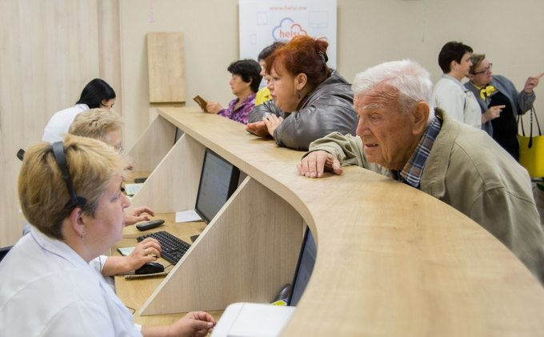

Діяльність Центру Первинної Медіко-Санітарної Допомоги №1 Подільського району

Основними завданнями Підприємства є :
- організація надання прикріпленому населенню первинної медико-санітарної допомоги;
- забезпечення належної доступності та якості первинної медико-санітарної допомоги прикріпленого населення;
- організація взаємодії із закладами охорони здоров'я ,що надають вторинну (спеціалізовану) медичну допомогу, третинну(високо спеціалізовану) медичну допомогу та екстренну медичну допомогу;
- організація та надання невідкладної медичної допомоги населенню.
Відповідно до покладених на нього завдань Підприємсто забезпечує:
- надання населенню первинну медико-санітарну допомогу;
- належну та рівну доступність первинної медико-санітарної допомоги для населення шляхом розвитку мережі відокремлених підрозділів ,наближених до місць проживання населення;
- реалізацію права громадян вільно вибирати лікаря,що надає первинну медико-санітарну допомогу ( лікар загальної практики - сімейний лікар,лікар- терапевт,педіатр-дільничний);
- наступність та послідовність обсеження,лікування та реабілітація пацієнтів у взаємодії з іншими закладами охорони здоров'я відповідно до медичного маршруту пацієнта;
- скеровування пацієнтів для отримання медичної допомоги на вторинному та третинному рівнях;
- здійснення деспансеризації населення;
- діяльність з придбання ,зберігання,відпуску,використання та знищення наркотичних засобів, їх аналогів або прекурсорів,отруйних чи сильнодіючих засобів,психотропних речовин за наявності ліцензіїна здійснення відповідних видів діяльності у Підприємстві,амбулаторіях як його відокремлених підрозділаху порядку всановленому законодавством України;

-надання паліативної допомоги пацієнтам на останніх стадіях перебігу невиліковних захворювань,яка включає комплекс заходів,спрямованих на полегшення фізичних та емоційних страждань пацієнтів;
- проведення санітарно-просвітницької роботи,навчання населення здоровому способу життя,основами надання самодопомоги та взаємодопомоги;
- раннє виявлення та профілактику неінфекційних захворювань;
-раннє виявлення та профілактику соціально небезпечних захворювань;
- проведення разом із санітарно-епідеміологічною службою заходів масової та індивідуальної профілактики інфекційних захворювань;
- встановлення наявності показань та здійснення відбору хворих для отримання санаторно-курортного лікування;
- проведення експертизи тимчасової втрати працездатності;
-направлення осіб з ознаками стійкої втрати працездатності на медико-соціальну експертизу,спрямування пацієнтів на медико-соціальну реабілітацію;
- виписку рецептів для пільгового забезпечення медикаментами окремих груп населення відповідно до законодавсва України.
*Центр первинної медико-санітарної допомоги №1"Подільського району м. Києва у своїй діяльності керується:
Конституцією України, законами України, постановами Верховної Ради України, указами і розпорядженнями Президента України, актами Кабінету Міністрів України, наказами Міністерства охорони здоров'я України, рішеннями Київської міської ради, розпорядженнями виконавчого органу Київської міської ради, наказами Департамену охорони здоров'я, розпорядженнями Подільської районної в місті Києві державної адміністрації, наказами управління охорони здоров'я Подільської районної в місті Києві державної адміністрації.
 вул. Волоська 47, м.Київ
вул. Волоська 47, м.Київ e-mail@gmail.com
e-mail@gmail.com 044 344-33-33
044 344-33-33